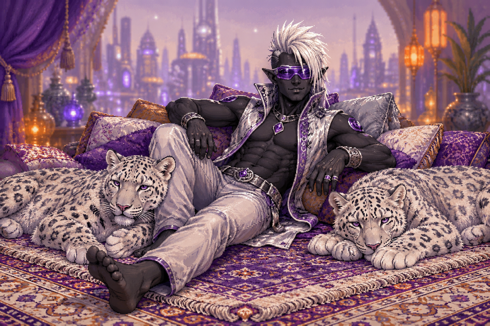

Mes jeux

Site en construction : cette page sera enrichie progressivement.
Présentation
Je suis drow-gamer. Je développe des prototypes de mini-jeux vidéo pensés pour être jouables aussi bien par des joueurs voyants que non-voyants.
Je suis moi-même aveugle, membre honoraire de la grande famille des courageux explorateurs des ombres. C’est aussi pour cela que je m’intéresse aux jeux accessibles aux personnes déficientes visuelles. Ex-voyant et très attaché au sens de la vue, il me tient à cœur que mes interfaces puissent être appréhendées par tout le monde.
Centres d’intérêt
- Jeux de rôle
- Jeux de stratégie
- Littérature fantastique, fantasy, horreur et science-fiction